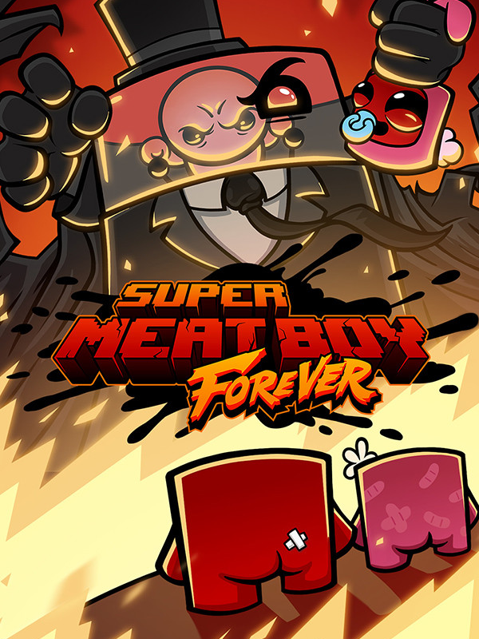

Super Meat Boy Forever
Super Meat Boy Forever
Detalhes
|  | |
| Tempo de jogo | Não Jogado |
| Última Atividade | Nunca |
| Adicionado | 11/02/2025 13:17:33 |
| Modificado | 11/02/2025 13:22:42 |
| Status de Conclusão | Not Played |
| Biblioteca | Epic |
| Fonte | Epic |
| Plataforma | PC (Windows) |
| Data de Lançamento | 23/12/2020 |
| Pontuação da Comunidade | 77 |
| Avaliação da crítica | 70 |
| Pontuação do Usuário | |
| Gênero | Adventure Indie Platform Puzzle |
| Desenvolvedor | Team Meat |
| Editor | Team Meat Thunderful |
| Funções | Single Player |
| Links | Steam Official YouTube Wikia Wikipedia Epic Twitch iPhone iPad |
| Tag | [GGDeals] Synced |
Descrição
Meat Boy and Bandage Girl have grown as a couple since 2010. It seems like only yesterday the two love birds were escaping from an exploding laboratory in the sky. Now it’s the current year, and they’ve welcomed their daughter Nugget into the world. Their peaceful days enjoying life as a family came to an abrupt end when Dr. Fetus beat the snot out of them with a rusty shovel, and kidnapped Nugget! Now it’s up to Meat Boy and Bandage Girl to rescue their daughter from a lunatic fetus in a jar that can only be described as an incel version of Tony Stark.
- Super Meat Boy Forever is the sequel to Super Meat Boy! This is a new experience that eclipses the original. Don’t stare directly at it unless you still have your eclipse glasses.
- 7200 individually handcrafted levels combine dynamically to give you a new challenge every single time you play. Seven thousand two hundred levels. They said we couldn’t do it, but we did. Who’s they? Don’t ask. They don’t like it when you ask.
- It’s hard, but fair. Nothing in life worth having comes easy. Just ask Dark Soulman.
- Meat Boy and Bandage Girl can fight back. It’s time to unleash the raw fury of parenthood on their foes just like Liam Neeson in that documentary about his family vacation in Paris.
- Bigger boss battles than before. Your mind will be blown. Your socks will be blown off. Team Meat is not liable for any of this.
- Brand new art with stunning detail and resolution. There are a lot of pixels in here. Grab the biggest display you have and watch those dots change color rapidly with gumption. Don’t sit too close though. (If your parents aren’t home you can sit as close as you want we won’t tell, but Team Meat is still not liable for any of this.)
- A soundtrack composed by Ridiculon so intense that the state of Wyoming has issued a ban on all audio devices capable of playing it out of fear that just a single note will cause the dormant super volcano beneath Yellowstone to erupt ushering in a new age of darkness.
- Frame by frame artisan crafted in game animations, and animated cutscenes that will make you experience procedurally generated emotions.
- A story so rich and moving that it makes Citizen Kane look like an unboxing video for a dehumidifier.
- Super Meat Boy Forever is the sequel to Super Meat Boy! This is a new experience that eclipses the original. Don’t stare directly at it unless you still have your eclipse glasses.
- 7200 individually handcrafted levels combine dynamically to give you a new challenge every single time you play. Seven thousand two hundred levels. They said we couldn’t do it, but we did. Who’s they? Don’t ask. They don’t like it when you ask.
- It’s hard, but fair. Nothing in life worth having comes easy. Just ask Dark Soulman.
- Meat Boy and Bandage Girl can fight back. It’s time to unleash the raw fury of parenthood on their foes just like Liam Neeson in that documentary about his family vacation in Paris.
- Bigger boss battles than before. Your mind will be blown. Your socks will be blown off. Team Meat is not liable for any of this.
- Brand new art with stunning detail and resolution. There are a lot of pixels in here. Grab the biggest display you have and watch those dots change color rapidly with gumption. Don’t sit too close though. (If your parents aren’t home you can sit as close as you want we won’t tell, but Team Meat is still not liable for any of this.)
- A soundtrack composed by Ridiculon so intense that the state of Wyoming has issued a ban on all audio devices capable of playing it out of fear that just a single note will cause the dormant super volcano beneath Yellowstone to erupt ushering in a new age of darkness.
- Frame by frame artisan crafted in game animations, and animated cutscenes that will make you experience procedurally generated emotions.
- A story so rich and moving that it makes Citizen Kane look like an unboxing video for a dehumidifier.